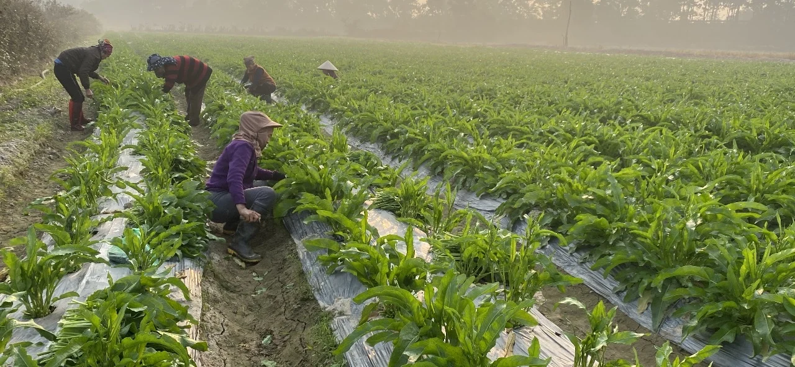

TƯ LIỆU TỪ VƯỜN
Nhật ký vườn sâm Đỗ Thị Tuyết: từ hàng cây đến công việc chăm sóc
Những hàng cây, lối đi giữa luống và người chăm sóc đem lại một góc nhìn gần gũi về vùng nguyên liệu. Bộ tư liệu mới ghi lại công việc thực tế phía sau câu chuyện Sâm Nữ Hoàng.
Đọc câu chuyện ↗